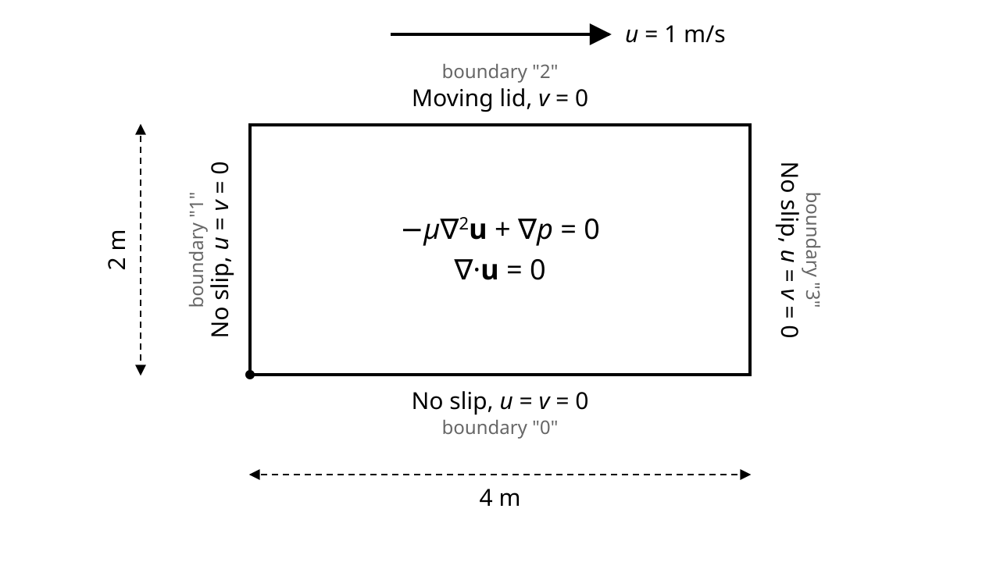

Overview
Creeping Flow in a 2D Lid-Driven Cavity Tutorial
In this tutorial, we solve the steady Stokes flow equations inside a two-dimensional lid-driven cavity. The lid-driven cavity is a classical benchmark problem in computational fluid dynamics where the top wall moves at a constant horizontal velocity while the remaining walls are stationary, driving a recirculating flow inside the domain.
Mathematical Formulation
The steady Stokes equations for an incompressible Newtonian fluid with no body forces are: \(\nabla \cdot \mathbf{u} = 0\) and \(-\mu \nabla^{2} \mathbf{u} + \nabla p = \mathbf{0}\), where \(\mathbf{u} = (u,v)\) is the velocity vector, \(p\) is the pressure and \(\mu\) is the dynamic viscosity. In the FEAScript implementation below, we set the viscosity coefficient to \(\mu = 1.0\).

Schematic of the 2D lid-driven cavity: horizontal velocity (u=1) at the top edge and no-slip condition (u=v=0) at the other edges.
The above schematic illustrates the problem domain and outlines the associated boundary conditions. To satisfy the Ladyzhenskaya–Babuška–Brezzi (LBB) inf-sup stability condition, FEAScript uses the Taylor-Hood mixed finite element formulation. In this approach, velocity is discretized with 9-node biquadratic (Q2) elements and pressure with 4-node bilinear (Q1) elements.
Solving with FEAScript
Below is a demonstration of how to use the FEAScript library to solve the Stokes lid-driven cavity problem in your web browser. You only need a simple HTML page to run this example where the following code snippets should be included. First, load the required external libraries:
<head> <!-- ...head region... --> <script src="https://cdnjs.cloudflare.com/ajax/libs/plotly.js/2.35.3/plotly.min.js"></script> <!-- ...rest of head region... --> </head>
We should then define the problem parameters, such as the model type, the mesh configuration and the boundary conditions. This is performed using the FEAScript API directly in the HTML file:
<body>
<!-- ...body region... -->
<script type="module">
// Import FEAScript library
import { FEAScriptModel, plotSolution, printVersion } from "https://core.feascript.com/dist/feascript.esm.js";
window.addEventListener("DOMContentLoaded", (event) => {
// Print FEAScript version in the console
printVersion();
// Create and configure model
const model = new FEAScriptModel();
model.setModelConfig("creepingFlowScript");
model.setMeshConfig({
meshDimension: "2D",
elementOrder: "quadratic",
numElementsX: 12,
numElementsY: 6,
maxX: 4,
maxY: 2,
});
// Apply boundary conditions
model.addBoundaryCondition("0", ["constantVelocity", 0, 0]); // Bottom boundary
model.addBoundaryCondition("1", ["constantVelocity", 0, 0]); // Left boundary
model.addBoundaryCondition("2", ["constantVelocity", 1, 0]); // Top boundary
model.addBoundaryCondition("3", ["constantVelocity", 0, 0]); // Right boundary
// Solve
model.setSolverMethod("lusolve");
const result = model.solve();
// Extract velocity and pressure fields from the solution vector
const totalNodesVelocity = model._creepingFlowMetadata.totalNodesVelocity;
const solutionVector = result.solutionVector;
const uVelocity = solutionVector.slice(0, totalNodesVelocity);
const vVelocity = solutionVector.slice(totalNodesVelocity, 2 * totalNodesVelocity);
const velocityMagnitude = uVelocity.map((u, i) => Math.sqrt(u * u + vVelocity[i] * vVelocity[i]));
// Plot velocity magnitude as a contour
plotSolution(model, { solutionVector: velocityMagnitude, nodesCoordinates: result.nodesCoordinates },
"contour", "velocityMagnitudeCanvas");
// Plot u-velocity component as a contour
plotSolution(model, { solutionVector: uVelocity, nodesCoordinates: result.nodesCoordinates },
"contour", "uVelocityCanvas");
// Plot v-velocity component as a contour
plotSolution(model, { solutionVector: vVelocity, nodesCoordinates: result.nodesCoordinates },
"contour", "vVelocityCanvas");
});
</script>
<!-- ...rest of body region... -->
</body>
In the boundary condition definition, the numbers at the left side (from "0" to
"3") indicate the boundaries of the geometry (the mesh generator of FEAScript has assigned
numbers to the boundaries, starting from the bottom boundary and proceeding clockwise). The
"constantVelocity" condition sets the velocity components \(u\) and \(v\) at the boundary
nodes (the second and third arguments respectively).
Since the Stokes solver uses a mixed formulation, the solution vector contains all DOFs packed
sequentially: \([u_0, \ldots, u_{N_2-1}, \, v_0, \ldots, v_{N_2-1}, \, p_0, \ldots, p_{N_1-1}]\), where
\(N_2\) is the number of velocity nodes (Q2) and \(N_1\) is the number of pressure nodes (Q1). The
velocity components are extracted by slicing the solution vector and each field can then be plotted
individually using the existing plotSolution function.
After solving the case, the results are shown in 2D contour plots. To visualize them, include HTML containers where the plots will render:
<body> <!-- ...body region... --> <div id="velocityMagnitudeCanvas"></div> <div id="uVelocityCanvas"></div> <div id="vVelocityCanvas"></div> <!-- ...rest of body region... --> </body>
Results
Below are the 2D contour plots of the computed velocity magnitude \(|\mathbf{u}| = \sqrt{u^2+v^2}\), horizontal velocity component \(u\), and vertical velocity component \(v\). These plots are generated in real time using FEAScript.